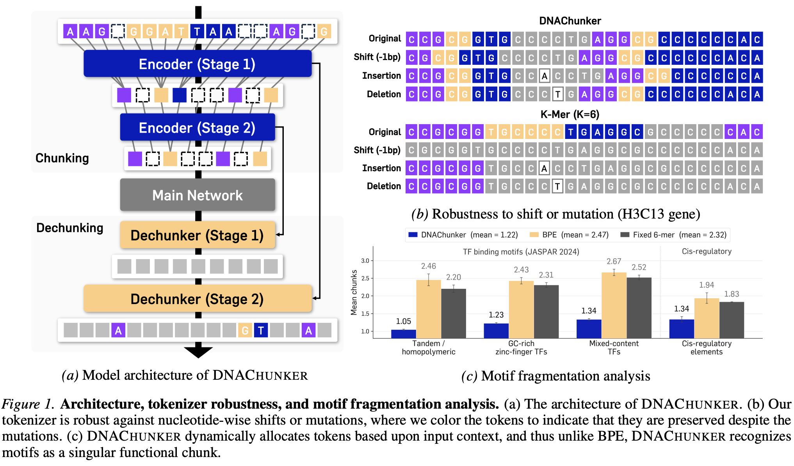
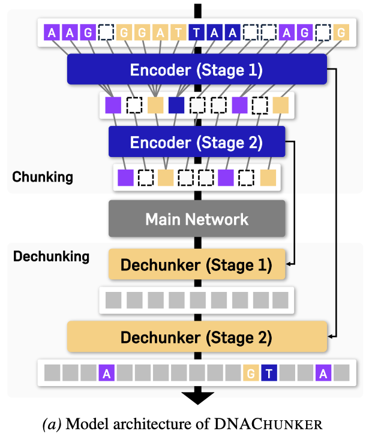
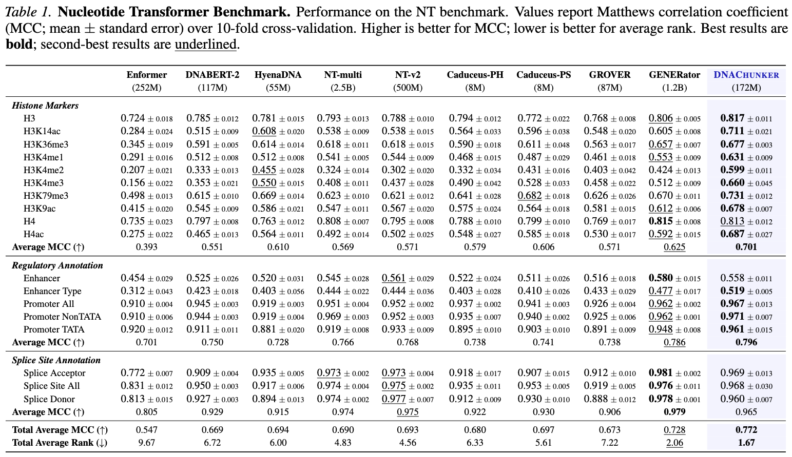
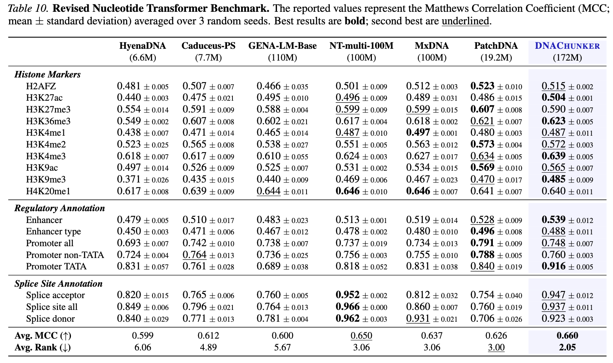
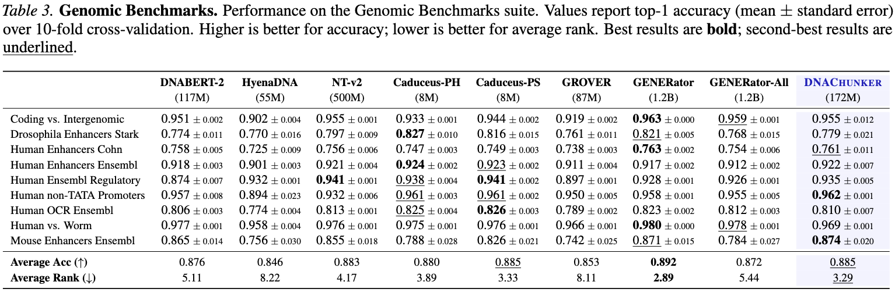
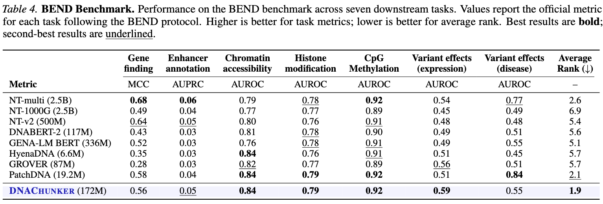
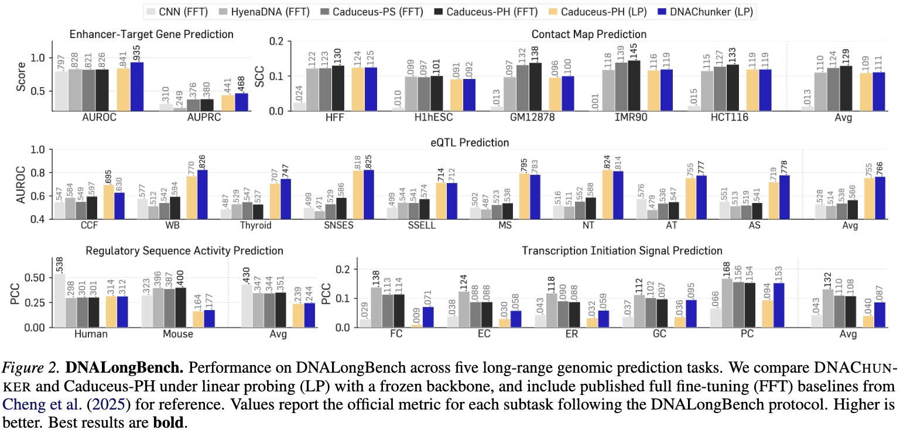
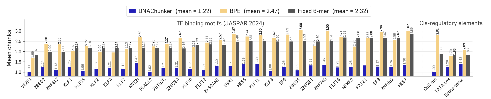

Paste a DNA sequence (or generate a random one) and the pretrained checkpoint tokenizes it on the fly. The animation reveals both stages of chunking — Stage 1 then Stage 2 — emerging beneath the raw bases.
DNAChunker is a bidirectional masked language model wrapped around a learnable, two-stage segmentation module. A lightweight bidirectional Mamba encoder produces base-pair embeddings; a router compares adjacent positions by cosine dissimilarity and emits hard boundary indicators, merging similar positions into a single chunk. The compressed sequence is processed by a 30-layer Transformer trunk with RoPE, then mirrored by a bidirectional dechunker that smooths and gates encoder residuals back to nucleotide resolution.
Two design choices make this work in the masked setting:
[MASK] is forced to be a singleton chunk, so
segmentation depends on genomic context — not on a
pretraining-only artifact that will be absent at inference.

With 172M parameters trained only on GRCh38/hg38, DNAChunker matches or beats much larger multispecies-pretrained baselines. Toggle a benchmark to see the per-task numbers.
Best total average MCC (0.772) and best rank (1.67) across 18 tasks — +0.044 MCC over GENERator (1.2B params) with only 14% of its parameters.

Best average MCC against learnable-tokenization baselines (MxDNA, PatchDNA), with +0.068 on splice-site annotation — a task family where prior learnable tokenizers underperform fixed schemes.

Second-best average rank across 9 classification tasks; on par with GENERator in top-1 accuracy while using 7× fewer parameters and only the human reference genome.

Best average rank (1.9) across 7 frozen-embedding tasks; leads on variant-effect-on-expression prediction (0.59 AUROC).

Surpasses Caduceus on all five long-range tasks under linear probing, and exceeds task-specific expert models on enhancer–target gene interaction and eQTL prediction.

Compute. At 16 kbp inputs, DNAChunker uses 1.58× fewer forward FLOPs than a same-parameter BPE model and 17.6× fewer than per-nucleotide tokenization — the overhead of learnable boundaries becomes a net efficiency gain at long context.
Functional motifs survive as single chunks. On 8 kb windows containing 29 JASPAR TF-binding motifs and three cis-regulatory elements, DNAChunker fragments each occurrence into 1.22 tokens on average. BPE averages 2.47 — statistically indistinguishable from a sequence-blind 6-mer baseline (2.32). Frequency-driven merges simply do not align with functional boundaries; a learned router does.

Token length tracks biological information density. Across chr1–chr22 and chrX, DNAChunker spends short chunks on coding Exons (≈14–16 bp) and Promoters (≈20 bp), longer chunks on Introns and Simple repeats, and the longest on SINEs — where length further decays from young → mid → old copies (≈32 → 28 → 17 bp). A fixed BPE vocabulary cannot express this ordering and collapses six of the seven categories into a ≈10 bp band.
@inproceedings{kim2026dnachunker,
title = {DNAChunker: Learnable Tokenization for DNA Language Models},
author = {Kim, Taewon and Shin, Jihwan and Kim, Hyomin and Jung, Youngmok
and Lee, Jonghoon and Lee, Won-Chul and Ahn, Sungsoo and Han, Insu},
booktitle = {Proceedings of the 43rd International Conference on Machine Learning (ICML)},
year = {2026}
}